Bike trails, forest preserves and day trips, all measured from an Oak Park front porch.
Short answer: not locked in at all
Oak Park's west edge is a continuous strip of Cook County forest preserve along the Des Plaines River, about a mile from the middle of town. From there, three long trails fan out: the Illinois Prairie Path runs 61 miles west through the suburbs to the Fox River, the Des Plaines River Trail runs 28 miles north through the woods, and the Salt Creek Trail runs south to Brookfield Zoo. East, the 606 and the Lakefront Trail are a bike ride or a 25-minute train hop away.
The village itself is flat, gridded, and has marked bike routes on the quiet streets, so kids ride to school and to the pool. Metra and the CTA both take bikes, which makes one-way rides easy. Big-landscape nature is a 90-minute drive (Starved Rock, Indiana Dunes), but the daily and weekend version is genuinely close.
The honest trade: it is less nature than a mountain or lake town. What you get instead is downtown Chicago 20 minutes away by train: the Art Institute, Millennium Park's free summer concerts and Jazz Fest, Maggie Daley Park, the museum campus, all without a car.
10 minThatcher Woods, river trails, Trailside Museum
15 minPrairie Path trailhead, then 61 miles west
30 minBrookfield Zoo by bike, the 606
45 minLakefront Trail by bike or Green Line
30 to 40 min driveWaterfall Glen, Morton Arboretum, Busse Woods
75 to 90 min driveIndiana Dunes, Starved Rock
Living here: which part, how diverse, which schools
Neighborhoods, the Oak Park vs Ann Arbor table, schools, cost.
Numbers are from the 2020 Census, the 2025 Illinois Report Card and Michigan's district data, with Ann Arbor alongside since that is the other candidate.
The Lake Theatre marquee, Lake St. A 1936 movie palace, still the town's living room on a Friday night.
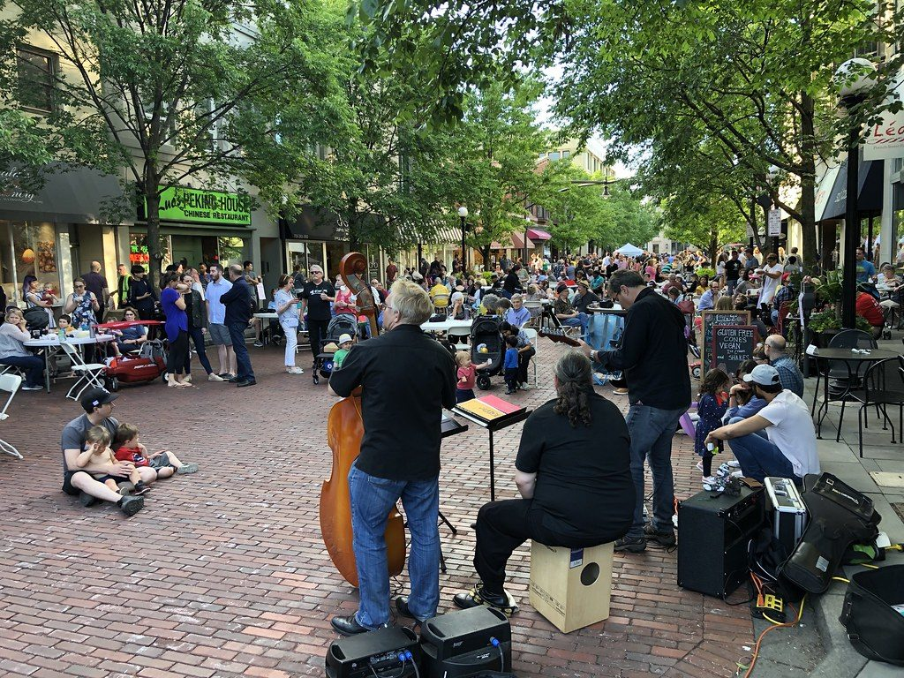
Marion Street on a summer Thursday Night Out: brick street, string lights overhead, bands, kids everywhere.
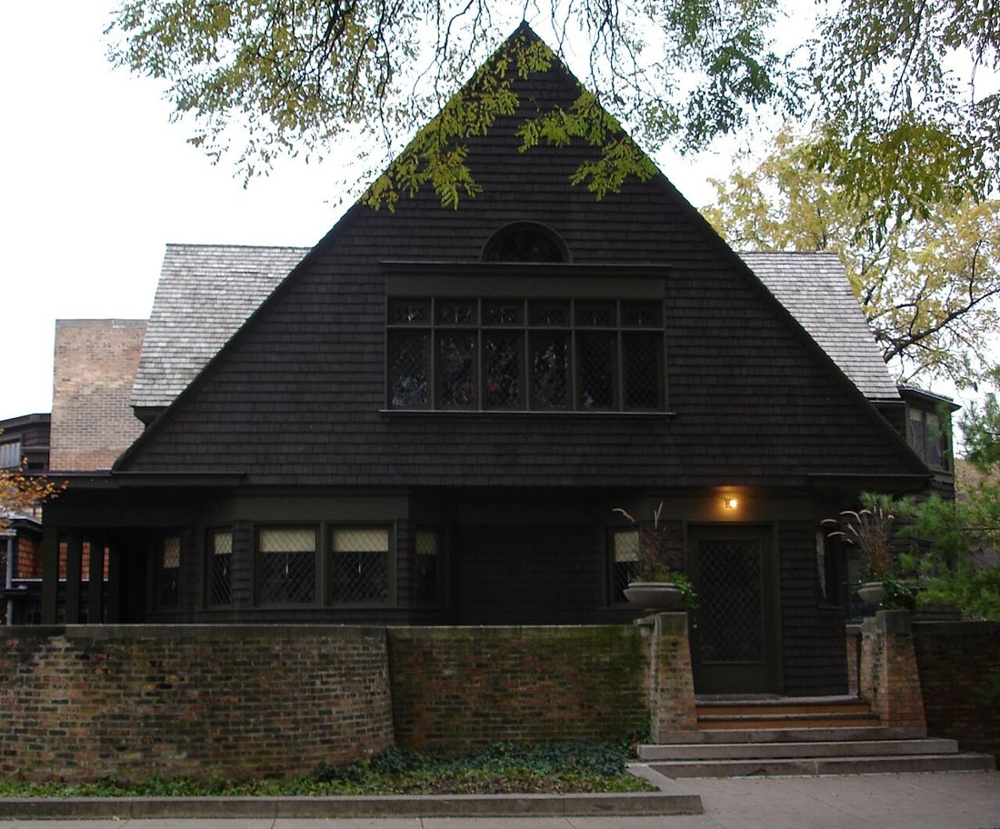
Wright's home and studio, Chicago Ave. The north-central district has 23 of his buildings.
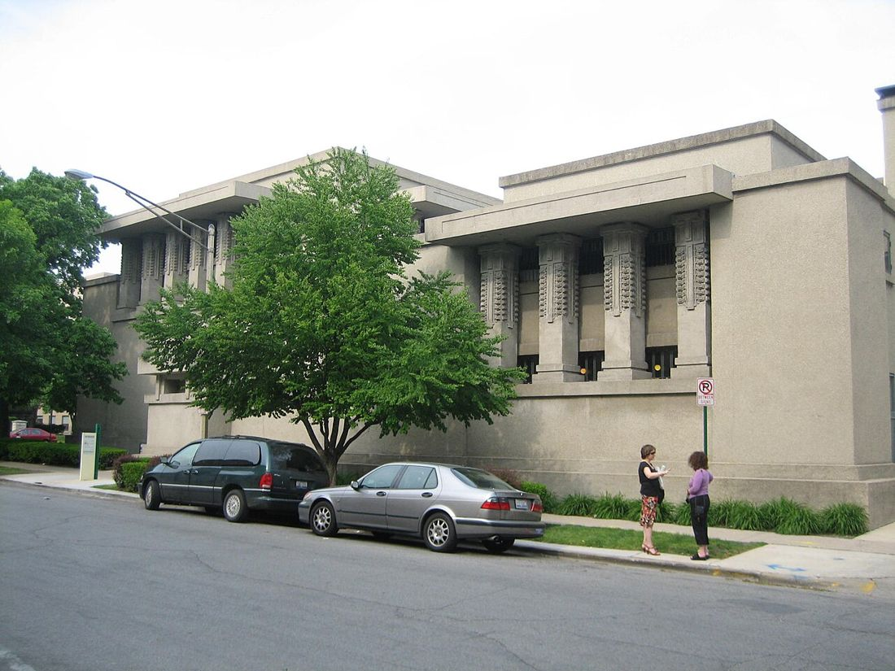
Unity Temple, Lake St. A UNESCO World Heritage site, two blocks from the Green Line.
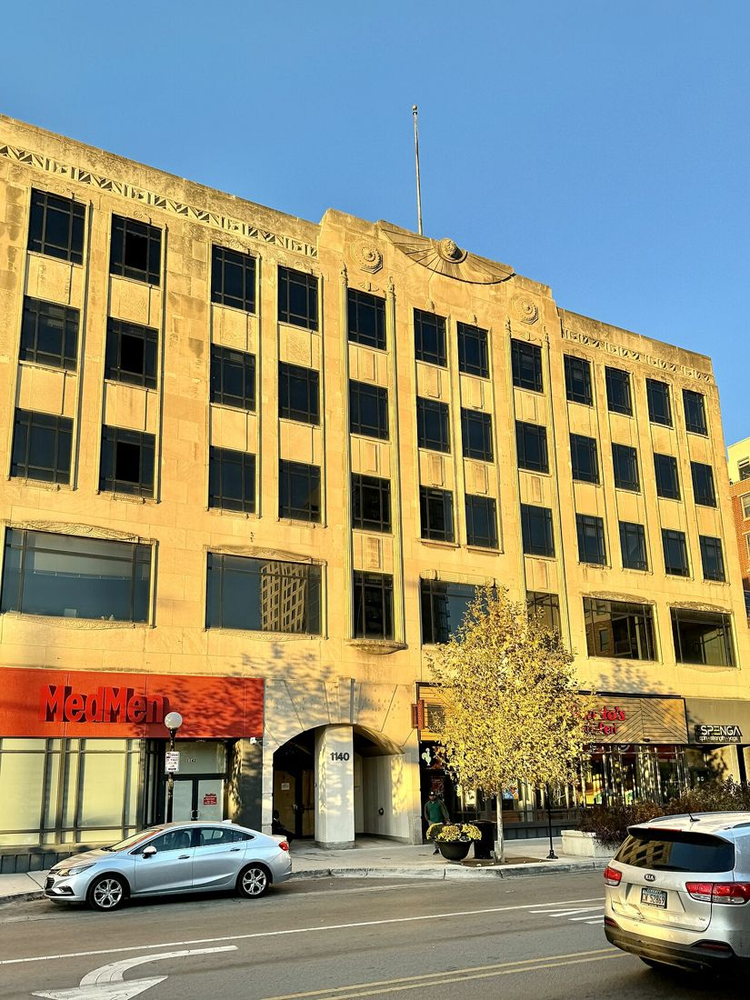
Lake Street downtown: the library, the Lake Theatre, restaurants, the farmers market on Saturdays.
Areas of Oak Park
Oak Park is 4.5 square miles and a grid, so nothing is far from anything. The village splits roughly into a north half (bigger houses, quieter, historic) and a south half (bungalows and two-flats, more affordable, more mixed, closer to the Blue Line and the expressway). The main street districts:
Frank Lloyd Wright Historic District (north-central). Division to Lake, Ridgeland to Marion. The postcard Oak Park: Prairie School houses on big lots, old trees, walk to downtown and both train lines. The priciest part of town.
Downtown / Hemingway District (Lake St and Marion St). Restaurants, the library, the Lake Theatre's neon marquee, the Metra and Green Line stations, the Saturday farmers market and its famous doughnuts. Marion Street is the brick pedestrian-scale block with string lights and summer Thursday Night Out concerts. Condos and apartments here; houses a few blocks out. Most walkable.
Pleasant District (just south of downtown). Marion, Pleasant and South Blvd around the Oak Park Green Line stop. Small restaurants, a wine bar, Ridgeland Common pool and rink nearby. Good if you want to walk to a train and a beer.
Arts District / South Oak Park (Harrison St, Austin to Ridgeland). Galleries, studios, cafes, the most neighborhood-feeling strip. Bungalows and American Foursquares, the most affordable houses in the village, and the most mixed blocks. Two blocks from the Blue Line and I-290. If Ann Arbor's homogeneity is the worry, look here first.
Gunderson and Ridgeland historic districts (south-central and east). 1900s frame houses on tight, friendly blocks. Scoville Park, Ridgeland Common, the Green Line. Closest to the city; Chicago's Austin neighborhood is across Austin Blvd.
North Oak Park (north of Division). Post-war brick, wider lots, Lindberg Park, Mann school. Quieter and more suburban, least walkable to trains.
River Forest, next door west. Same high school, own elementary district, bigger houses, higher prices, less diverse. Backs directly onto Thatcher Woods.
Diversity: Oak Park vs Ann Arbor, honestly
Both towns are majority white. The difference is in who the rest of the town is. Ann Arbor's diversity is university-driven and mostly Asian; Oak Park's is Black and Hispanic, and it has been that way on purpose since the 1960s. The schools tell the same story more sharply than the census.
Oak Park village
Ann Arbor city
Oak Park K-8 (D97)
Oak Park high school (OPRF)
Ann Arbor Public Schools
White
62%
67%
52%
51%
50%
Black
18%
6%
16%
17%
13%
Hispanic
9%
5%
15%
16%
11%
Asian
5%
16%
3%
5%
14%
Two or more races
n/a
n/a
13%
n/a
12%
Low-income students
19%
n/a
17%
Village and city figures: 2020 Census. School figures: 2025 Illinois Report Card and Michigan CEPI / NCES 2023-24. Rounded; small categories omitted so columns do not sum to 100.
The history matters here. Oak Park passed the first municipal fair housing ordinance in the country on May 6, 1968, weeks before the federal Fair Housing Act, and then did the unusual thing: it stayed integrated. The Oak Park Regional Housing Center, founded in 1972, still steers renters toward integrated blocks and the village bans for-sale signs to prevent panic selling. The result is a town that has been roughly one-fifth Black for 40 years while the suburbs around it flipped one way or the other. Kids grow up with it as normal.
Schools
Structure. Oak Park runs two districts: District 97 for K-8 (eight neighborhood elementaries, two middle schools, Brooks and Julian) and District 200, which is one high school, Oak Park and River Forest, about 3,400 students. Everyone goes to OPRF, which is why the town feels like one place. Ann Arbor is one district of 32 schools and 17,000 students with school choice across four high schools, including Community High, the small alternative one.
Quality. OPRF scored 91.8 of 100 on the 2025 state report card with strong theatre, music and a big athletics program. District 97 is rated Commendable, with the usual big-district spread between its elementaries. Ann Arbor's schools are the strongest in Michigan and benchmark similarly. Neither town is a reason to pick or reject the other.
Personal learning. D97 has a real gifted and differentiated program and IEP support is a strength (a quarter of D97 students have a plan of some kind). Families who want more choose from a dense private layer: Montessori, Catholic, Lab-school-style. We chose Montessori and it has been the right call for our two.
Chicago options. Being 20 minutes from the city means the Chicago Public Schools selective-enrollment and magnet system is not available to you (residency), but private and specialty programs in the city are.
Cost and the drive to Suttons Bay
Houses. Median sale price is in the same range in both towns, roughly $450k to $550k depending on the month and source. Oak Park's south half is noticeably cheaper than the Wright district; the spread inside the village is bigger than the spread between the two towns.
Property tax is Oak Park's real negative. Effective rates run about 3% of value here versus about 1.6% in Ann Arbor, so the same house costs several thousand dollars a year more to hold. It pays for the schools, the parks and the library, but it is the line item people leave over.
Suttons Bay. Google puts it at 5 hours 19 minutes from Oak Park versus 4 hours 4 minutes from Ann Arbor. Seventy-five minutes longer, on a trip you would do as a full day either way. Amtrak's Pere Marquette to Grand Rapids and the Blue Water to Port Huron do not help; it is a drive.
Kids, amenities and the annual calendar
Library, gymnastics center, pools, rink, conservatory, parks, events.
The Park District, the library and the village run more programming than two kids can use. This is the short list, with the annual calendar at the end.
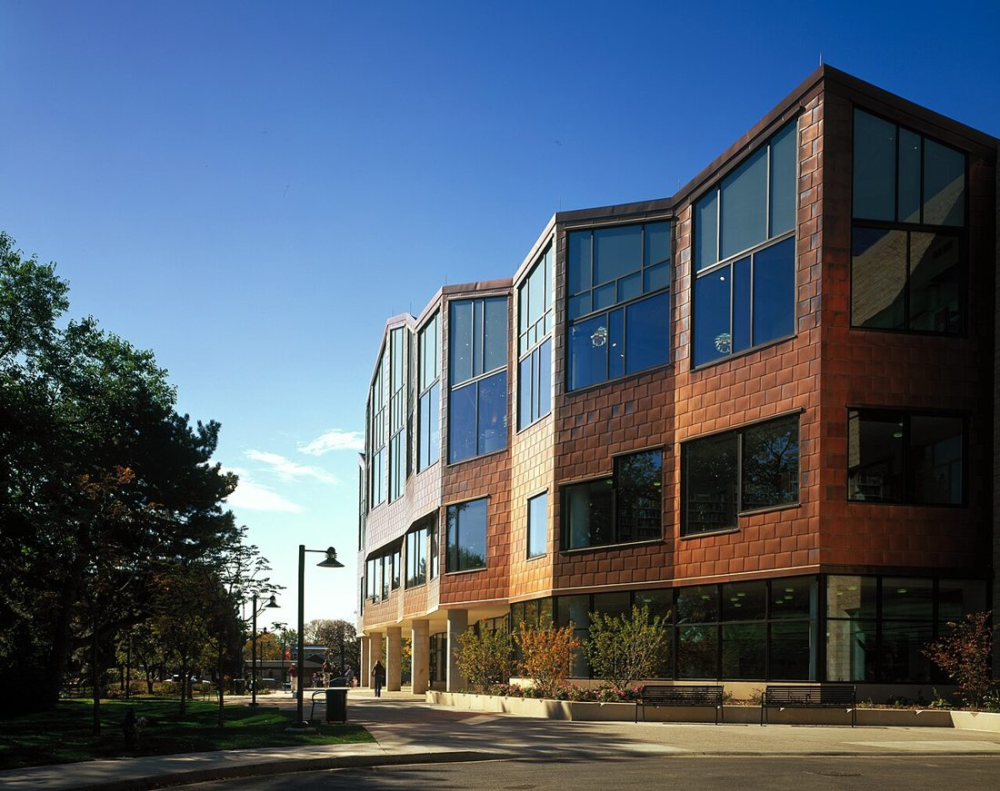
Main library, Lake St at Scoville Park (2003). A whole floor for kids, a teen space, a maker lab, and two branch libraries.
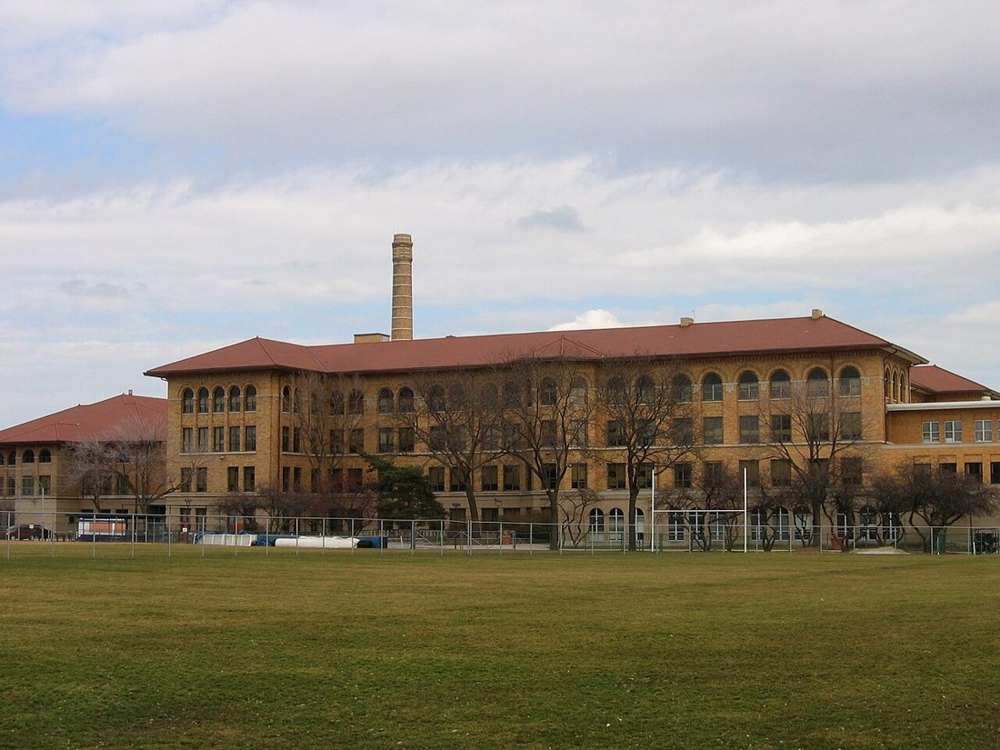
Oak Park and River Forest High School, 1907 campus with a new field house, pool and stadium. Hemingway went here.
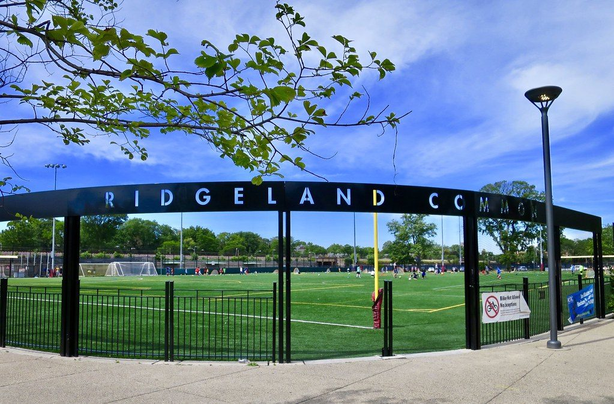
Ridgeland Common: outdoor pool with slides, year-round indoor ice rink, turf fields, all in one park at Lake and Ridgeland.
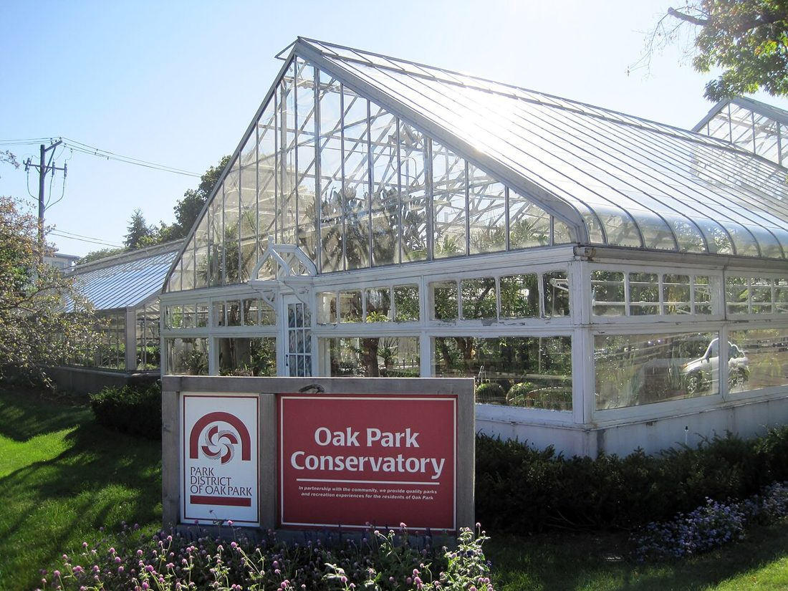
Oak Park Conservatory, free, tropical and desert rooms with resident birds; KidsFest here every fall.Saturday farmers market, May to November, behind Pilgrim Church. The church doughnuts are the town's religion.
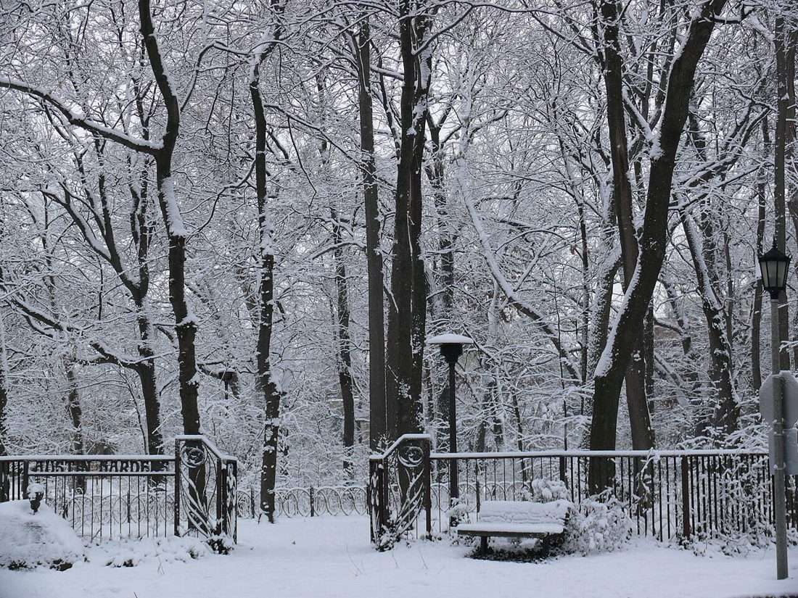
Austin Gardens, downtown. Outdoor Shakespeare every summer from the Oak Park Festival Theatre; bring a picnic.
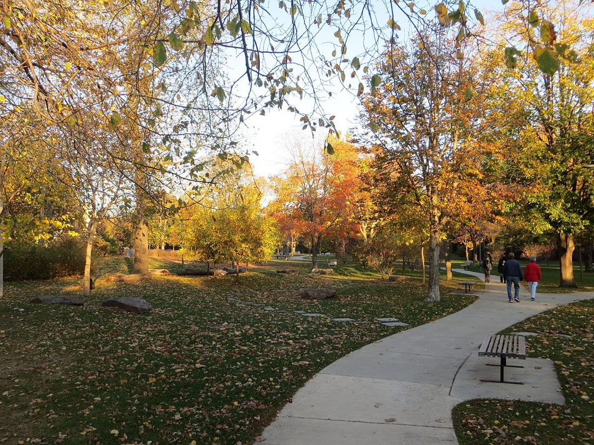
Mills Park and Pleasant Home, south of downtown. One of a dozen neighborhood parks, none more than a few blocks from any house.
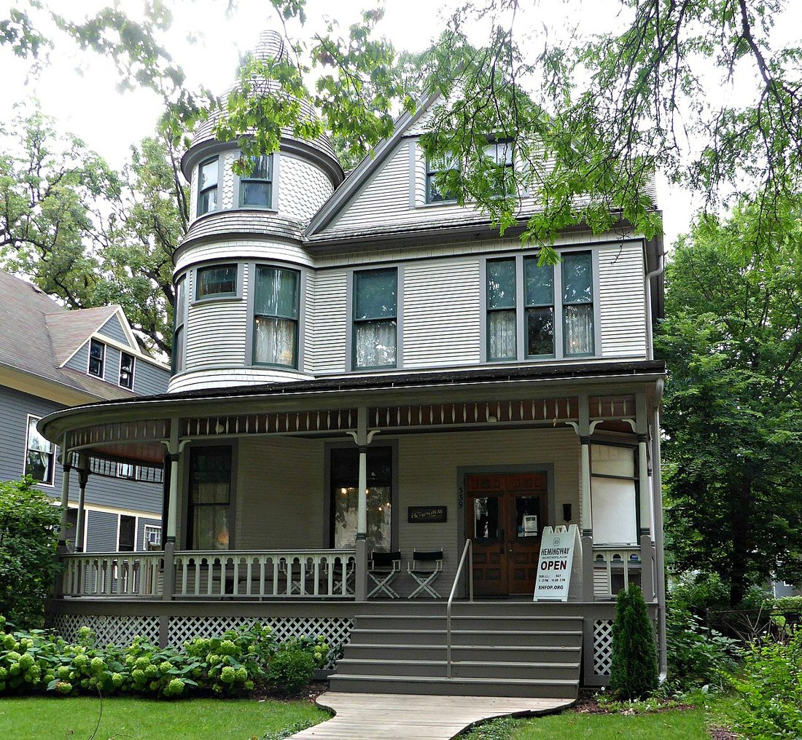
Hemingway's birthplace, Oak Park Ave. A museum, plus the Wright Home and Studio and Pleasant Home for the architecture side.
Places kids actually use
Gymnastics and Recreation Center (21 Lake St). Park District facility with preschool through competitive gymnastics, open gym several times a week, dance and fitness rooms upstairs, and the default birthday-party venue for ages 3 to 16. No licensed photo exists, so you will have to trust us that it is big and loud in the good way.
Two outdoor pools. Ridgeland Common (slides, zero-depth entry) and Rehm Pool on the south side (50-meter pool, the big slide). Season passes cover both.
Library. Main library plus the Maze and Dole branches. Summer reading, homework help, a maker lab, free museum passes, and it sits on Scoville Park so the after-library plan writes itself.
Sports. AYSO soccer, Little League, park district basketball, tennis, lacrosse, the works. Fields at Ridgeland Common, Lindberg Park, Taylor Park and the high school.
Nature and science. The Conservatory (free), the Trailside Museum across the river, and Wonder Works, a small children's museum on North Ave for the younger one.
Culture. Wright Home and Studio, Unity Temple, Hemingway birthplace, Pleasant Home. The Lake Theatre for movies. Oak Park Festival Theatre outdoors in summer. Plus everything in Chicago 20 minutes away.
The annual calendar
May. Wright Plus housewalk (private Wright interiors, one Saturday). Farmers market opens.
June. A Day in Our Village, first Sunday, Scoville Park: 140 booths, every club and team in town. Thursday Night Out starts on Marion Street and runs through August.
July 4. Parade down Ridgeland Ave, then fireworks.
Summer. Festival Theatre in Austin Gardens; concerts in Scoville Park; pools open Memorial Day to Labor Day.
Fall. KidsFest at the Conservatory; Oaktoberfest downtown; Halloween, which Oak Park takes as seriously as any town in the country. Whole blocks decorate and the big houses hand out full-size bars.
Winter. Holiday tree lighting downtown; the Ridgeland rink; sledding hills at Scoville and Taylor.
Getting to family: Suttons Bay, St. Louis, Puerto Rico
Drive, train and nonstop-flight comparison, Oak Park vs Ann Arbor.
Family is in Suttons Bay, St. Louis and Puerto Rico, so here is how each town does on those trips. Oak Park's advantage is O'Hare and Union Station; Ann Arbor's is Michigan itself.
From Oak Park
From Ann Arbor
Suttons Bay, MI drive
5 h 19 min, about 330 miles (I-94 then US-131 or I-96 to M-72). One stop.
4 h 04 min, about 260 miles. Ann Arbor wins by 75 minutes.
St. Louis drive
About 4 h 30 min, 300 miles straight down I-55. Oak Park sits right on the I-290 to I-55 connection.
About 7 h 45 min, 520 miles via I-94 and I-55 through Chicago, or I-69 and I-70. Oak Park wins by 3 hours.
St. Louis train
Amtrak Lincoln Service, Union Station to St. Louis, 4 to 5 trains a day, about 5 hours at up to 110 mph. Metra from Oak Park to Union Station is 20 minutes.
Amtrak Wolverine to Chicago, about 4.5 hours, then the Lincoln Service. Ten hours plus a transfer; nobody does it.
St. Louis fly
ORD to STL nonstop, about 1 h 15 min, many flights a day on American and United, plus Southwest from Midway.
DTW to STL nonstop, about 1 h 30 min, several a day on Delta and Southwest.
Puerto Rico fly
ORD to San Juan nonstop, about 4 h 45 min, roughly 3 a day on American, United and Frontier. Oak Park to O'Hare is 30 minutes by car or Blue Line.
DTW to San Juan nonstop, about 4 h 20 min, Delta about 4 days a week plus seasonal Frontier. Ann Arbor to DTW is 30 minutes by car.
Ann Arbor itself
3 h 45 min drive, or the Wolverine train from Union Station, 4 h 18 min, three a day. Visiting whoever ends up there is easy either way.
Drive times are typical no-traffic Google Maps figures as of September 2026; Suttons Bay numbers from a direct check. Flight schedules change seasonally; check before assuming a nonstop.
Everything here starts from the front porch. The first is the daily fix; the rest are half-day rides.
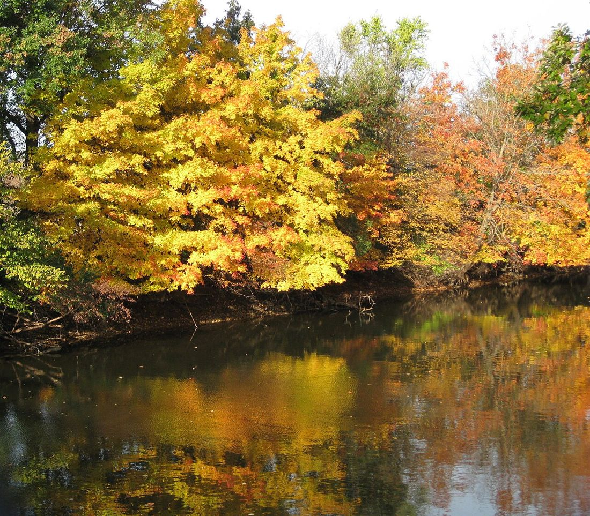
Out the door
Thatcher Woods and the Des Plaines River corridor
1 to 2 miles west. A 10-minute ride.
Oak Park's western neighbor, River Forest, ends at a continuous band of Cook County forest preserve along the Des Plaines River. Oak woods, floodplain forest, a pond the kids can fish, dirt trails, and the Trailside Museum (free, live native animals, a good rainy-day stop). This is the everyday nature fix, not a day trip.
Unpaved walking trails through Thatcher Woods and GAR Woods
Trailside Museum of Natural History at 738 Thatcher Ave, free, open most days
Connects north into the Des Plaines River Trail and south to the Prairie Path trailhead
Trailhead at 1st Ave in Maywood, about 3 miles from central Oak Park.
This is the answer to 'is there a trail all the way out to the western suburbs.' Yes. The Prairie Path is 61 miles of former rail line, crushed limestone, nearly flat, running west through Elmhurst, Villa Park, Lombard, Glen Ellyn and Wheaton, where it forks to Elgin, Geneva, Batavia and Aurora. It was the first rail-to-trail conversion in the country. You can ride 10 miles to Elmhurst for lunch and come back, or go 40 miles to the Fox River and take the Metra home with the bikes.
61 miles total, flat, mostly off-street, parks and ice cream stops along it
Kid-ready: the stretch to Elmhurst has only a handful of road crossings
Links to the Great Western Trail and the Fox River Trail at the far end
Southern access at North Ave and 1st Ave, about 4 miles from Oak Park.
28 miles of Cook County trail running north along the river through more than a dozen forest preserves, then another 30 or so miles in Lake County. Mostly crushed gravel and dirt, so a hybrid or gravel bike beats a road bike. This one feels like the woods, not a bike highway: deer, herons, long stretches with no traffic noise.
28.4 miles in Cook County, paved and unpaved mix
Best for older kids on a hybrid; some muddy stretches after rain
Continues into the Lake County section for a full-day ride
Brookfield Zoo is about 5 miles south; Bemis Woods another 7 west.
A paved 7-mile trail follows Salt Creek from Brookfield Zoo west through Brezina Woods and Bemis Woods to Western Springs, part of a 25-mile greenway that eventually reaches Busse Woods. Riding to the zoo from Oak Park is a real family outing: bike there, see the animals, ride home.
7 miles paved, gentle, forest preserve almost the whole way
Oak Park sits on the western edge of Chicago. The city's two signature trails are a bike ride or a short train hop away.
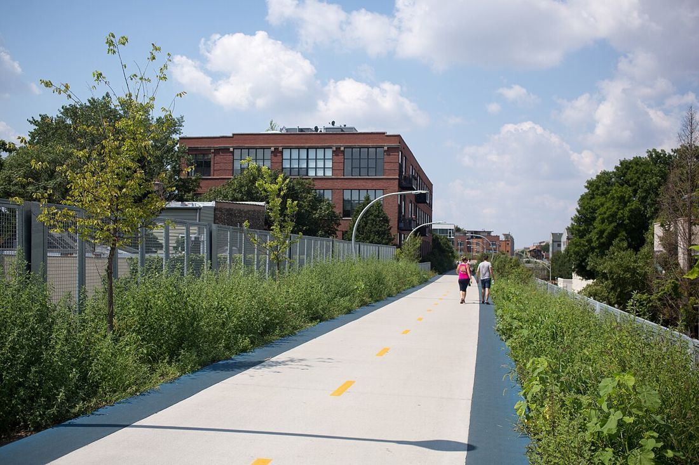
City ride
The 606 (Bloomingdale Trail)
West end at Ridgeway Ave, about 5 miles northeast of Oak Park.
A 2.7-mile elevated rail line turned linear park, 17 feet above Humboldt Park, Logan Square, Bucktown and Wicker Park. Ride Augusta or Division east from Oak Park, climb the ramp at Ridgeway, and you are gliding over the city with no intersections. The east end drops you at Ashland, a few blocks from coffee, pizza and the Blue Line. An extension east toward the Chicago River is planned for 2027.
2.7 miles, no cross traffic, playgrounds and small parks at the ramps
Kids love it; it is basically a bike bridge across four neighborhoods
Combine with the Blue Line at Damen to get home without riding back
About 9 miles east by bike, or 25 minutes on the Green Line with bikes aboard.
18.5 miles along Lake Michigan from the South Shore to Edgewater, now with separated bike and pedestrian lanes on most of it. Beaches, harbors, the museum campus, Lincoln Park Zoo (free). From Oak Park you ride straight east on Washington or Lake, or put the bikes on the Green Line and start at the lake.
18.5 miles, separated bike lane, beaches every couple of miles
CTA trains allow bikes outside rush hour; the Green Line runs through Oak Park
Lincoln Park Zoo and North Avenue Beach are the kid magnets
The other half of the trade. Less raw nature than a mountain town, but the Art Institute, Millennium Park and the best playground in the Midwest are a short train ride, no car needed.
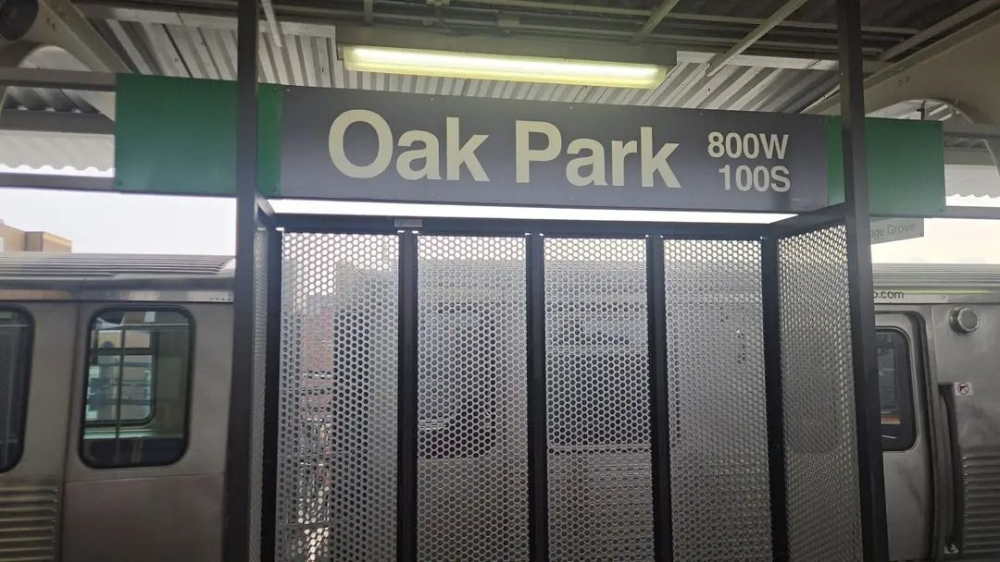
20 to 25 minutes
Green Line and Metra to the Loop
Four CTA Green Line stops, three Blue Line stops and a Metra station inside the village.
This is the part that makes Oak Park work: downtown Chicago is a 20-minute train ride, no parking, kids ride free under 7 and cheap after. The Green Line runs every 10 minutes and drops you at Millennium Park; Metra UP-West is faster and quieter and lands at Ogilvie. Both take bikes. The Blue Line along the Eisenhower at the south edge of town runs to O'Hare.
Green Line: Harlem, Oak Park, Ridgeland, Austin stops, straight into the Loop
Metra UP-West: Oak Park station downtown, about 20 minutes to Ogilvie
Blue Line at Harlem or Austin goes the other way to O'Hare in 25 minutes
One block from the Green Line's Washington/Wabash stop.
The Bean, Crown Fountain (kids run through it in summer), the Lurie Garden, and the Pritzker Pavilion, which hosts free concerts most summer nights. The Chicago Jazz Festival takes over the park on Labor Day weekend; Blues Fest in June, Gospel Fest, the Grant Park Music Festival's free classical concerts all summer. Bring a blanket and dinner.
Free concerts at the Pritzker Pavilion, June through August
Crown Fountain and the Bean are the two things every visiting kid asks to go back to
Across the bridge from Millennium Park, over the road.
A 20-acre park built over a parking garage: the Play Garden with its three-story slides and climbing towers for the 8 to 12 set, a separate toddler area, two rock-climbing walls, mini golf, and a skating ribbon that winds through the trees in winter. It is the answer to 'what do we do with the kids downtown' and it is free.
Play Garden is free; climbing walls and ice skating cost a little
The Skating Ribbon runs roughly November through early March
Walk across the BP Bridge from the Pritzker Pavilion lawn
Art Institute is next to Millennium Park; the Field, Shedd and Adler are a 15-minute walk south.
The Art Institute is one of the great museums of the world, and Illinois residents with kids get in on discounted or free days. Thorne Miniature Rooms and the armor are where kids start; the Impressionists and the Chagall windows are where parents linger. The museum campus adds the Field Museum (Sue the T. rex), the Shedd Aquarium and the Adler Planetarium, plus the Lakefront Trail right out the door.
Art Institute: kids under 14 free, Illinois resident free days in winter
Field Museum, Shedd, Adler: check each for Illinois free days
All of it within a mile of the Green Line, on the Lakefront Trail
Thirty to ninety minutes by car. These are the weekend-scale nature trips.
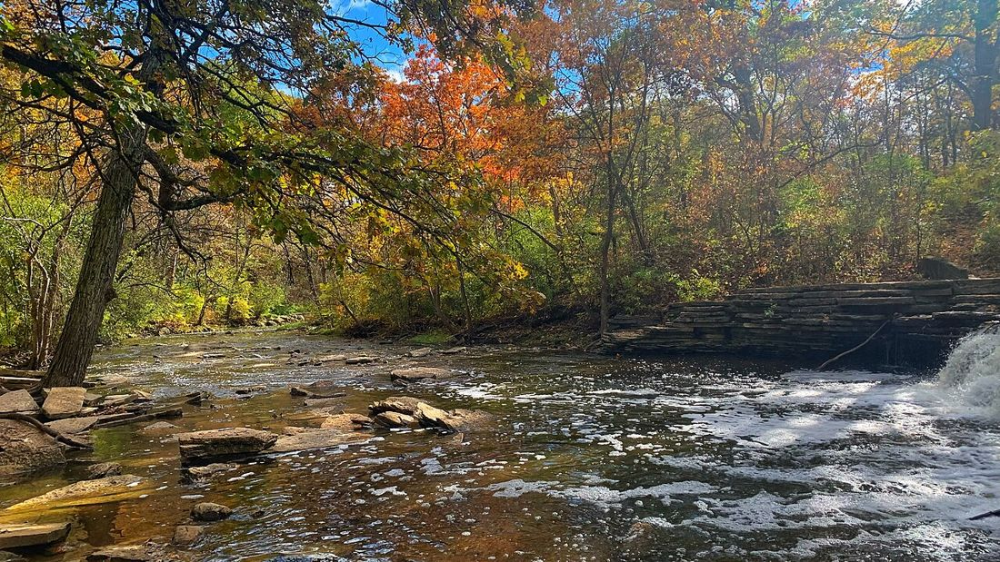
Day trip, 35 min
Waterfall Glen
Darien, about 25 miles southwest. Drive with bikes on the rack.
A 2,500-acre DuPage preserve ringing Argonne National Lab, with almost 11 miles of crushed-limestone trail. The main loop is the best family ride in the region: rolling, wooded, a small waterfall, sawmill ruins, bluffs over the Des Plaines valley. Feels far from the city and is 35 minutes away.
Main loop about 9.5 miles, crushed limestone, some real hills
Bikes only on designated trails; the loop is designated
1,700 acres of trees from around the world, 16 miles of hiking trails, a paved loop road you can bike, and a four-acre Children's Garden that is one of the best in the country. Membership pays for itself in three visits. Fall color here is the family tradition for half the western suburbs.
Children's Garden, Maze Garden, big troll sculptures in the woods
Bikes allowed on the paved loop roads
Winter: sledding hill, snowshoe rental, holiday light walk
A paved 8-mile loop around a big reservoir inside one of Cook County's largest preserves, with an elk pasture at the north end (yes, real elk). Flat and fully paved, so it is the easiest long ride for a kid on a new bike. Boat rentals in summer.
Geneva and St. Charles, about 40 miles west. Metra UP-West goes there with bikes.
Roughly 40 miles of trail along the Fox River through Aurora, Batavia, Geneva, St. Charles, Elgin and Algonquin. Old river towns, dams, islands, a lot of ice cream. The Prairie Path connects to it, so the classic big day is: ride the Prairie Path out, Metra home.
Bikes ride free on Metra; UP-West stops in Oak Park and Geneva
Geneva and St. Charles downtowns are right on the trail
Red Oak Nature Center and the Fabyan windmill are stops kids like
About 55 miles southeast around the bottom of the lake.
A national park with 15 miles of Lake Michigan beach, big dunes to climb, and the Chicago skyline on the horizon. The state park section has the 3 Dune Challenge for kids who need to burn something off. Doable as a long day; better as a night in a Chesterton cabin.
West Beach: dune succession trail plus a real swim beach
Mount Baldy and the 3 Dune Challenge for climbers
South Shore Line train also gets you there from downtown
Eighteen sandstone canyons cut into bluffs over the Illinois River, with seasonal waterfalls and 13 miles of trails and boardwalk. This is the 'real' nature trip, the one people drive to from the whole state. Spring runoff and the days after heavy rain are when the falls run. Matthiessen State Park next door is quieter and just as good.
French Canyon and Wildcat Canyon are the short must-dos with kids
Bikes on trains, bike share, routes, maps, caveats.
Bikes on trains. Metra (the UP-West line stops in Oak Park) allows bikes on all trains at no charge; you carry them on yourself. The CTA Green and Blue lines take bikes outside weekday rush hours. This turns every trail into a one-way ride.
Bike share. Oak Park tried Divvy from 2016 to 2018 and dropped it for low ridership, so plan on owning bikes. Divvy stations start at the Chicago border a mile east.
Getting to the trails. The village has a bike plan with marked neighborhood greenways on quiet streets. Washington and Augusta are the common east-west routes into the city; Thatcher and the Madison bridge get you to the river.
Honest caveats. The Des Plaines corridor trails flood and get muddy in spring. The Prairie Path's first mile from Maywood is the least scenic bit. Winter shuts most of this down from December to March unless you are into fat bikes and snowshoes, which the Morton Arboretum rents.
How it works in practice
Bikes on trains. Metra (the UP-West line stops in Oak Park) allows bikes on all trains at no charge; you carry them on yourself. The CTA Green and Blue lines take bikes outside weekday rush hours. This turns every trail into a one-way ride.
Bike share. Oak Park tried Divvy from 2016 to 2018 and dropped it for low ridership, so plan on owning bikes. Divvy stations start at the Chicago border a mile east.
Getting to the trails. The village has a bike plan with marked neighborhood greenways on quiet streets. Washington and Augusta are the common east-west routes into the city; Thatcher and the Madison bridge get you to the river.
Honest caveats. The Des Plaines corridor trails flood and get muddy in spring. The Prairie Path's first mile from Maywood is the least scenic bit. Winter shuts most of this down from December to March unless you are into fat bikes and snowshoes, which the Morton Arboretum rents.